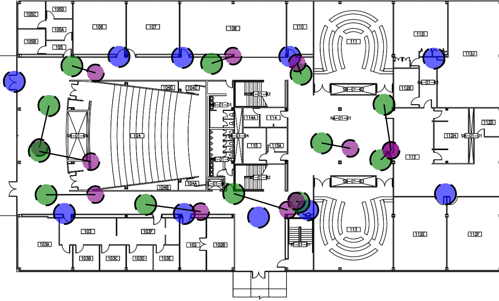

Overview
In 2014, the FCC estimated that 10,00 lives could be saved per year if the indoor location of emergency callers using cell phones were provided. That same year, the FCC mandated that commercial mobile radio service (CMRS) providers must provide the indoor location of an emergency caller by finding the floor the user is on as well as the position on that floor to within 50 meters of accuracy. The BOSSA Platform is a service that can compute the indoor location of an emergency caller in real-time using signal strengths from bluetooth beacons.
In this project, my role was to deploy the bluetooth beacons in participating buildings, gather test data, tune the model to the test data, and then test the accuracy of the location estimates.

Indoor Location Algorithm
-
Scenario & Inputs
A person in distress calls emergency services using a cell phone inside of a multi-story building that has been outfitted with an array of bluetooth beacons. The phone begins polling nearby bluetooth beacons for signal strengths for a certain period of time (in our tests 5 or 10 seconds). During this scan, the phone will amass a dataset that contains a list of beacons and their received signal strength indicators (RSSIs) at different moments in time. When the scan period has elapsed, the phone will send this dataset over to the BOSSA Platform, where the indoor location can be estimated.
-
Step 1: Convert RSSI to distance
Compute the average RSSI for each beacon and then take the three beacons with the highest average RSSIs and convert those RSSI values into distances. The distance is an estimate of how far away the caller is from a particular beacon. This works off of the principle that RSSI will decrease with distance, so the lower the RSSI value, the further away the caller is from the beacon. However, many factors influence RSSI outside of distance. Obstructions such as walls and interference due to electromagnetic sources like WiFi also play a role in this measurement. This is why we only take the hottest three beacons: we want to minimize noise.
We convert RSSI to distance as follows:
$$ \begin{equation*} dist(rssi) = \begin{cases} 2\text{m} & -60 > rssi \geq -80 \:\text{dBm} \\ 5\text{m} & -80 > rssi \geq -100 \:\text{dBm} \\ 9.5\text{m} & -100 > rssi \geq -\infty \:\text{dBm} \\ \end{cases} \end{equation*} $$
-
Step 2: Get the position of the beacons
At this point, we have the distance each beacon is from the caller. In order for this information to be useful, we must also know the position of each beacon. The building, floor, and (x,y) coordinate on that floor is recorded in the BOSSA Platform for each beacon during deployment. Now we can estimate the caller's indoor location.
-
Step 3: Get the building the caller is in
First, we calculate the building the user is in. This is done by simply selecting the building that most frequently occurs among the three beacons.
-
Step 4: Get the floor the caller is on
Next, we calculate the floor the user is on. This is done by taking a weighted average of the floors the beacons are on where the weight is the estimated distance of the beacon.
$$ floor = round\left(\frac{\sum_{i=1}^{3}{\frac{floor_i}{dist(rssi_i)}}} {\sum_{i=1}^{3}{\frac{1}{dist(rssi_i)}}}\right) $$
-
Step 5: Estimate the position of the caller on that floor
Lastly, we estimate the (x,y) coordinate of the caller on that floor using a weighted least-squares regression where the weight is the square of the estimated distance.
$$ Minimize \sum_{i=1}^{3}{\frac{\left[dist(rssi_i) - \sqrt{(x_0 - x_i)^2 + (y_0 - y_i)^2}\right]^2}{dist(rssi_i)^2}} $$
Project Phases
-
Step 1: Deploy beacons
We had to deploy beacons in a multi-story building in order to get location estimates. We were granted permission to deploy beacons in the hallways of Stuart Building (SB) at the Illinois Institute of Technology Mies Campus. We were not allowed to place beacons in the classrooms and offices since the beacons gave off an ominous presence that made people feel like they were being spied on. We deployed 10 beacons to the first and second floor of Stuart and recorded the position of each beacon in the BOSSA Platform's backend server. We arranged the beacons in such a way that no matter where a caller was standing in the hallways, they would receive strong signals from at least three beacons.
-
Step 2: Gather test data
Using maps of the first 2 floors of SB, we identified test positions to collect data from. We evenly divided the test positions among the hallways. There were 12 positions on SB01 and 8 positions on SB02. We created an application using AndroidStudio and the AltBeacon library to collect test data from the test positions. When polling the bluetooth beacons, we used scanning periods of 5 seconds and 10 seconds. We collected test data for three days total, spread over a period of three months. Overall, we ended up with 61 data points for the 5 second period and 49 for the 10 second.
 -
Step 3: Model fitting
Since the space of all possible solutions was so small, we used a simple guess-and-check approach in order to determine the binning strategy. From our test data, we noted that RSSIs were in the range [-105dBm, -60dBm]. We also assumed that the tester was no more than 30 meters away from any of the three hottest beacons. We randomly guessed 100 different binning strategies under these constraints and selected the one that resulted in the least amount of error. We verified the robustness of this model by running this simple optimization over test data for individual days and then verifying that the bins produced still gave good location estimates. We found that the bins remained nearly the same, and produced similar results.
-
Step 4: Performance analysis
Using the bins produced by this algorithm, we were able to guess the floor the tester was on 100% of the time. Furthermore, we were able to estimate the position on that floor to within 4 meters of error 57% of the time, 6 meters of error 71% of the time, and 10 meters 100% of the time. In an emergency situation, these estimates produce results that are good enough to help first responders locate a person in distress. However, expanding the test environment to a building with more than two floors will be essential.